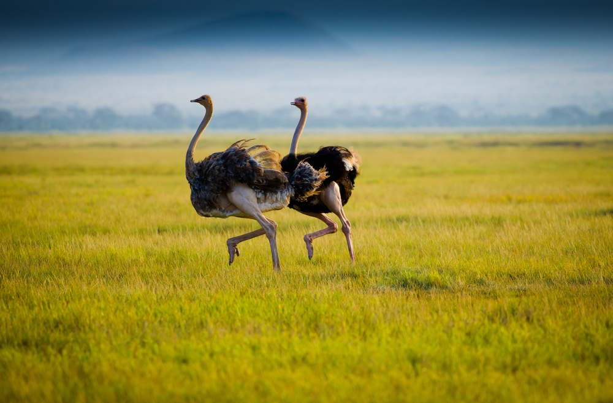

Unique creature
Ostriches aptly fall under the family of Struthio camelus, in the scientific world of classification. It is such an amazing creature that boasts of being the world's largest and heaviest bird. Originating from the diverse landforms of Africa, this bird has adapted to survive in different kinds of habitats, from dry desert regions to the moist savannas. It is proof that the ostrich is a resilient and adaptive species. The anatomical features of an ostrich are pretty peculiar. Having a long, slim neck, blending with the relatively huge round eyes, it takes an almost comical shape. However, these features are practical. Its long neck helps in grazing, and large eyes, which are the largest of any land animal, enable it to have excellent vision to detect threats from a distance. Even though ostriches are heavy, they are flightless birds. Their small wings are not adapted to fly but rather give them great speed. They have something to compensate for: they run. Ostriches can supposedly run up to 43 miles an hour with long muscular legs that are the reason for this speed. It makes them the fastest two-legged animal on the planet. They are able to outspeed most predators due to this speed and their high level of endurance. Therapeutically, ostriches are omnivores. In general, they eat plants, seeds, and fruits, but not every time; in some cases, they feed on insects, as well as on small vertebrates. Surprisingly, ostriches have been known to consume sand and pebbles; all these help in the grinding of food in their gizzard, which is located in their stomach, and for digestion. The most interesting bulks pie about the ostrich are their social or breeding behaviors. They are fairly social birds, and can thereby be observed in mixed groups with other grazing animals like zebras and antelopes. In case the female is impressed, it will mate with the highly displaying male. The most dominant male is mated to the most dominant female, and these two jointly take care of the eggs and chicks. But now, the same birds are under threat from natural predators as well as human activities. Just like the other birds, ostriches have natural predators like lions, cheetahs, and hyenas; in addition, ostriches have become a target for humans for their meat, feathers, and eggs. Habitat loss due to human encroachment is another big threat. Against all these backdrops of troubles, conservation programs are going on to make last-ditch efforts in saving such wonderful birds from extinction. The ostrich is an animal that represents extremities—a creature with two endemisms proving its uniqueness in the world of avians. From awesome sizes and speed to unique behaviors, the ostrich is an enigma of nature.